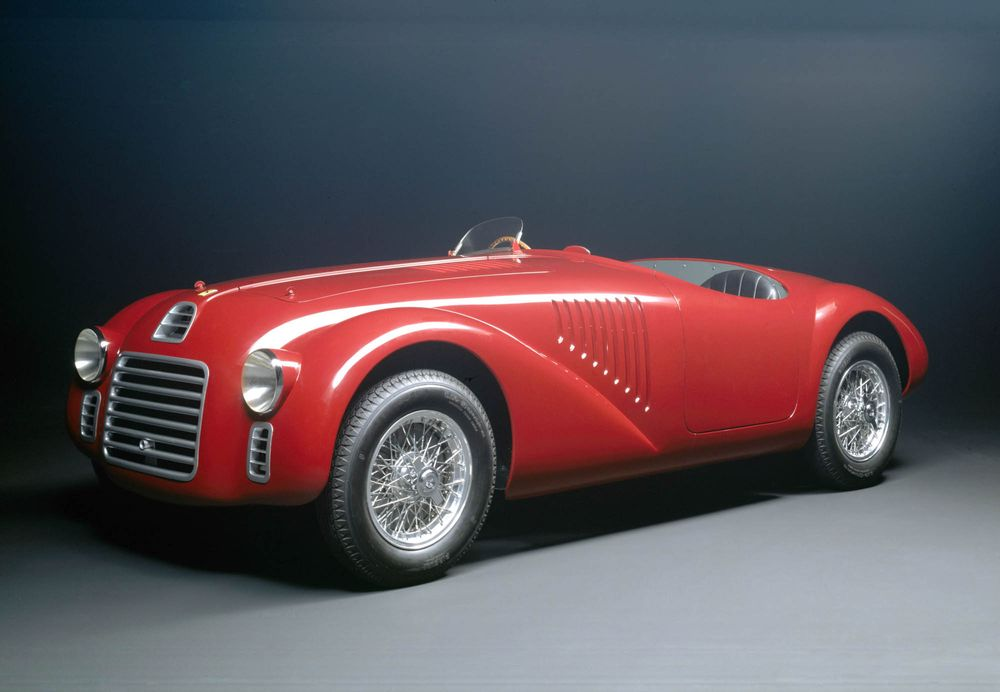
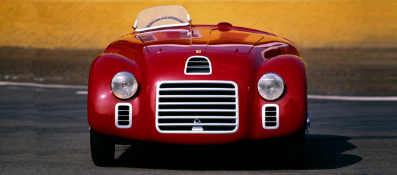
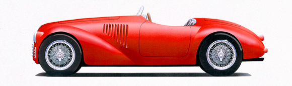

OVERVIEW
1947
125 S

This was the very
first car to wear the Ferrari badge.
The V12 engine was designed by
Gioacchino Colombo with contributions
from Giuseppe Busso and Luigi Bazzi.
Sport and competition versions of the
125 S were built with different bodywork
although the chassis and running gear
of the cars remained basically identical.

The 125 S’s debut on the Piacenza
circuit was, in the words of Enzo
Ferrari himself, “a promising failure.”
In fact, Franco Cortese had to pull out
because of a problem with the fuel pump
while leading the race. However, over
the following four months, the 125 S
was back on the track 13 times, winning
six of its races.
More information on
www.ferrari.com